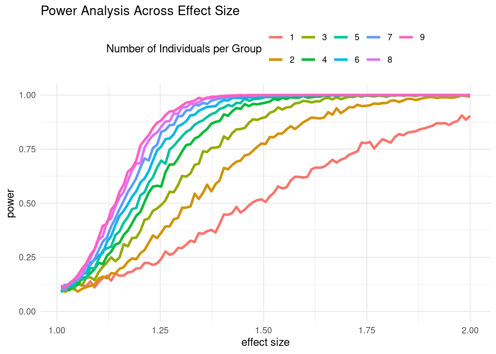
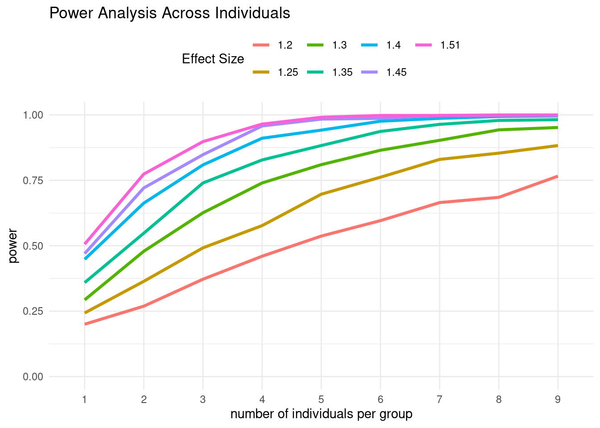

Last updated: 2024-12-05
Checks: 5 2
Knit directory: differentialDispersion/
This reproducible R Markdown analysis was created with workflowr (version 1.7.1). The Checks tab describes the reproducibility checks that were applied when the results were created. The Past versions tab lists the development history.
The R Markdown file has unstaged changes. To know which version of
the R Markdown file created these results, you’ll want to first commit
it to the Git repo. If you’re still working on the analysis, you can
ignore this warning. When you’re finished, you can run
wflow_publish to commit the R Markdown file and build the
HTML.
Great job! The global environment was empty. Objects defined in the global environment can affect the analysis in your R Markdown file in unknown ways. For reproduciblity it’s best to always run the code in an empty environment.
The command set.seed(20240625) was run prior to running
the code in the R Markdown file. Setting a seed ensures that any results
that rely on randomness, e.g. subsampling or permutations, are
reproducible.
Great job! Recording the operating system, R version, and package versions is critical for reproducibility.
Nice! There were no cached chunks for this analysis, so you can be confident that you successfully produced the results during this run.
Using absolute paths to the files within your workflowr project makes it difficult for you and others to run your code on a different machine. Change the absolute path(s) below to the suggested relative path(s) to make your code more reproducible.
| absolute | relative |
|---|---|
| /project2/gilad/awchen55/differentialDispersion/data/simulations/power_analysis | data/simulations/power_analysis |
Great! You are using Git for version control. Tracking code development and connecting the code version to the results is critical for reproducibility.
The results in this page were generated with repository version 33f41a2. See the Past versions tab to see a history of the changes made to the R Markdown and HTML files.
Note that you need to be careful to ensure that all relevant files for
the analysis have been committed to Git prior to generating the results
(you can use wflow_publish or
wflow_git_commit). workflowr only checks the R Markdown
file, but you know if there are other scripts or data files that it
depends on. Below is the status of the Git repository when the results
were generated:
Ignored files:
Ignored: .Rhistory
Ignored: .Rproj.user/
Ignored: analysis/cell_count_metrics_by_cell_type/
Ignored: analysis/scran_size_factors_debugging.nb.html
Ignored: analysis/sim500_analysis.nb.html
Ignored: analysis/simulation_cardiomyocytes_analysis.nb.html
Ignored: analysis/simulation_power_analysis.nb.html
Ignored: code/.ipynb_checkpoints/
Ignored: data/.ipynb_checkpoints/
Ignored: data/hybrid_lines_scran_normalized_data/
Untracked files:
Untracked: analysis/.ipynb_checkpoints/
Untracked: analysis/differential_dispersion_lowess_method.ipynb
Untracked: analysis/fitting_ash_hybrid_data.Rmd
Untracked: analysis/power_analysis.ipynb
Untracked: analysis/scran_size_factors_debugging.Rmd
Untracked: analysis/sim500_analysis.Rmd
Untracked: analysis/simulation_analysis.ipynb
Untracked: analysis/simulation_cardiomyocytes_analysis.Rmd
Untracked: analysis/simulation_normal_distribution.Rmd
Untracked: code/QTL_power_analysis.R
Untracked: code/simulation_background_genes_bin_cv_empirical_p_value_method.py
Untracked: code/simulation_background_genes_bin_cv_method.py
Untracked: code/step3_simulations_nominal_p_value.py
Untracked: data/hybrid_lines_cpm_normalized/
Untracked: data/hybrid_lines_log_cpm_regressed_out_data/
Untracked: data/hybrid_lines_raw_data/
Untracked: data/simulations/
Unstaged changes:
Modified: .Rprofile
Modified: analysis/differential_dispersion_hybrid_line.Rmd
Modified: analysis/differential_dispersion_hybrid_line_cpm_analysis.Rmd
Modified: analysis/negative_binomial_dispersion_estimation.Rmd
Modified: analysis/simulation_null_analysis.Rmd
Modified: analysis/simulation_power_analysis.Rmd
Modified: code/step1_simulations.py
Modified: code/step2_simulations.py
Modified: code/step3_simulations.py
Deleted: data/chimp_ASE_subset.csv
Deleted: data/human_ASE_subset.csv
Note that any generated files, e.g. HTML, png, CSS, etc., are not included in this status report because it is ok for generated content to have uncommitted changes.
These are the previous versions of the repository in which changes were
made to the R Markdown
(analysis/simulation_power_analysis.Rmd) and HTML
(docs/simulation_power_analysis.html) files. If you’ve
configured a remote Git repository (see ?wflow_git_remote),
click on the hyperlinks in the table below to view the files as they
were in that past version.
| File | Version | Author | Date | Message |
|---|---|---|---|---|
| Rmd | 33f41a2 | awchen55 | 2024-12-05 | update power analysis |
| html | 33f41a2 | awchen55 | 2024-12-05 | update power analysis |
| Rmd | 60a5b9d | awchen55 | 2024-12-02 | add power analysis |
| html | 60a5b9d | awchen55 | 2024-12-02 | add power analysis |
We perform a power analysis for QTLs using our simulations. We are asking two main questions. At what effect size do you detect 80% of true positives in genes that have 1 UMI/cell and 1k cells? At that same effect size, what about 2 UMI/cell in 500 cells? 0.5 UMI/cell in 2000 cells? Additionally, at the same effect size, what about across different numbers of individuals?
Under the simulation framework for \(i\) cells and \(j\) genes: \(E[X] = L_i\alpha_j\sigma_j\) and \(Var(X) =L_i\alpha_j\sigma_j + L_i^2 \alpha_j\sigma_j^2\), where \(L\) is the library size and \(\alpha, \sigma\) are the shape and scale parameters. To increase the dispersion level we multiply \(\sigma\) by an applied factor. We assume a fixed library size for all cells. We can set the target of 1 UMI/cell by setting the expectation equal to 1 for a fixed \(L,\alpha, \text{and } \sigma\).
We use the HDC dataset and look at the cardiomyocyte cell type. We pool genes that have mean expression of between 0.9 - 1.1 UMI/cell and fit a Gamma-Poisson model to estimate \(\phi\).
library(glmGamPoi)
library(dplyr)
card_path = "/project/gilad/brendan/dispersion/pilot/cHDC_data/cellranger_cluster-mode_trial/analysis/datasets/median_gene_detection/"
#setwd(card_path)
cardiomyocytes_data4000 <- readRDS(paste(card_path, "lane_a_card_downsampled_UMI_matrix_10.rds", sep = ""))
cardiomyocytes_data4000 <- t(as.matrix(cardiomyocytes_data4000))
# calculate mean expression and remove genes with low expression
cardiomyocytes_data4000_filtered <- cardiomyocytes_data4000[, colSums(cardiomyocytes_data4000 != 0) > 10]
# calculate mean expression
mean_expression4000 <- colMeans(cardiomyocytes_data4000_filtered)We group the genes within 0.9-1.1 UMI/cell. There are 778 genes.
# get indices for genes within bin of mean expression
mean_idx <- which(between(mean_expression4000,0.9,1.1))
grouped_data <- as.vector(cardiomyocytes_data4000_filtered[,mean_idx])
length(mean_idx)[1] 778Of these genes we also get an estimate of the average library size and use this as the fixed library size in the simulations.
avg_li <- mean(colSums(cardiomyocytes_data4000_filtered[,mean_idx]))
avg_li[1] 4064.29We now fit the Gamma-Poisson to the pooled data and estimate \(\phi\).
# fit gamma-poisson distribution
fit_gp <- glm_gp(grouped_data, size_factors=1)
sum_gp <- summary(fit_gp)
phi <- sum_gp$overdispersions
phi[1] 0.8917347We estimate the Gamma-Poisson values using glmGamPoi: \[ E[X] = \mu \hspace{20 mm} Var[X] = \mu + \mu^2\phi \]
Under the simulation framework: \[ E[X] = L_i\alpha_j\sigma_j \hspace{20 mm} Var(X) =L_i\alpha_j\sigma_j + L_i^2 \alpha_j\sigma_j^2 \]
Setting the expectation and variance equations equal to each other, we get: \[ \sigma = \frac{\mu\phi}{L} \hspace{20 mm} \alpha = \frac{1}{\phi} \]
We know that \(\mu = 1\) since we are targeting 1 UMI/cell. We multiply \(L_i\alpha_j\sigma_j\) to double check that it equals 1.
mu <- 1
sigma <- mu*phi/avg_li
alpha <- 1/phi
sigma*alpha*avg_li[1] 1For a fixed mean of 1 UMI/cell we want to test different effect sizes. We assess different effect sizes by varying the applied factor from: 1,1.1,1.2,…,2. We will do this and test across different individuals per group: 1, 2, 3, … , 25. Since we are testing for 1000 cells/individual we can pool all cells for individuals. For example, 25 individuals/group would be 25,000 cells in the null variance group and 35,000 cells in the effect size group for a total of 50 individuals.
sim_gene <- function(n,alpha,sigma,Li, sigma_multiplier=1){
# Simulate a single gene with following parameters:
# n: number of cells
# alpha: alpha parameter
# sigma: sigma parameter
# Li: library size
# sigma_multiplier: factor to increase variance
# Returns expression values for single gene in n cells
# initialize Y
Y <- rep(NA,n)
# calculate latent expression using gamma distribution
# ensure that simulation has mean within 10% of target
# perc_diff = 1
# while(perc_diff > 0.05){
lambdaj <- rgamma(n,shape = alpha/sigma_multiplier,scale = sigma*sigma_multiplier)
# perc_diff = (alpha*sigma - mean(lambdaj))/alpha*sigma
# }
#lambdaj <- rgamma(n,shape = alpha/sigma_multiplier,scale = sigma*sigma_multiplier)
# for each cell use the latent expression and library size to simulate expression
for(i in 1:n){
Y[i] <- rpois(1,Li*lambdaj[i])
}
return(Y)
}We perform the simulation for 1 individual/group and check the mean UMI.
set.seed(11222024)
varying_factor <- seq(1, 2, by = 0.1)
gene_sim_matrix = c()
for(i in 1:length(varying_factor)){
gene_sim <- sim_gene(1000,alpha,sigma,avg_li,sigma_multiplier=varying_factor[i])
gene_sim_matrix <- cbind(gene_sim_matrix,gene_sim)
}
colnames(gene_sim_matrix) <- make.names(varying_factor)
colMeans(gene_sim_matrix) X1 X1.1 X1.2 X1.3 X1.4 X1.5 X1.6 X1.7 X1.8 X1.9 X2
0.962 0.972 0.962 1.007 1.042 1.012 0.970 1.114 0.905 0.906 1.078 We now save the matrix data for each number of individuals.
set.seed(11222024)
path = "/project2/gilad/awchen55/differentialDispersion/data/simulations/power_analysis"
varying_factor <- seq(1, 2, by = 0.1)
num_indv <- c(1,seq(5, 50, by = 5))
for(j in 1:length(num_indv)){
gene_sim_matrix = c()
num_indv_grp = 1000*num_indv[j]
for(i in 1:length(varying_factor)){
gene_sim <- sim_gene(num_indv_grp,alpha,sigma,avg_li,sigma_multiplier=varying_factor[i])
gene_sim_matrix <- cbind(gene_sim_matrix,gene_sim)
}
colnames(gene_sim_matrix) <- make.names(varying_factor)
write.csv(as.data.frame(gene_sim_matrix), file = file.path(path,paste("power_analysis_indv_",num_indv[j],".csv",sep="")), row.names = FALSE)
}path = "/project2/gilad/awchen55/differentialDispersion/data/simulations/power_analysis"
head(read.csv(file.path(path, "power_analysis_indv_50.csv"))) X1 X1.1 X1.2 X1.3 X1.4 X1.5 X1.6 X1.7 X1.8 X1.9 X2
1 0 0 0 0 0 0 0 5 2 2 1
2 2 0 0 0 3 1 7 0 0 7 0
3 0 2 1 0 2 0 0 3 1 0 1
4 1 0 3 3 0 0 0 1 0 0 2
5 0 4 2 2 5 3 0 0 1 0 0
6 0 0 0 1 0 0 1 0 1 0 0We use the following equation to estimate variance by assuming a multiple hypergeometric model for the data. Kim et al. uses method of moments to estimate the variance.
\[ \hat{\sigma}_{g,HG}^2 = \frac{1}{n_{cells}}\sum_c \frac{Y^2_{cg} - Y_{cg}(1-q)}{N^2_cq^2- N_cq(1-q)} - \left( \frac{1}{n_{cells}}\sum_c\frac{Y_{cg}}{N_cq} \right)^2 \] Where for \(c\) cells and \(g\) genes, \(Y_{cg}\) is the observed transcript count, \(N_c\) is the true total transcripts, \(n_{cells}\) is the number of cells, and \(q\) is the sampling efficiency. \(N_cq\) is the library size.
We are assuming a two-sample problem between groups A and B, where A is the group with no effect size and B is the group with an effect size. Let \(\Delta t\) be the observed difference between groups A and B, where \(t\) is the statistic of interest. In our case, we are interested in differences in variance for a fixed mean. We perform bootstrapping for \(B\) iterations to create a sampling distribution of \(\Delta t_1,\dots,\Delta t_B\). To create the null distribution we subtract \(\Delta t\) from \(\Delta t_1,\dots,\Delta t_B\) to calculate \(\Delta t_1^*,\dots,\Delta t_B^*\). This is the same approach used by Kim et al. We then compute the achieved significance level (ASL) as described by Efron and Tibshirani:
\[ \text{ASL} = \begin{cases} \frac{1}{B}\sum^B_{i=1}1(\Delta t_i^* \geq\Delta t) , & \text{if } \Delta t \geq 0 \\ \frac{1}{B} \sum_{i=1}^B 1(\Delta t_i^* \leq\Delta t), & \text{if } \Delta t < 0 \end{cases} \ \]
sigma_sq_est <- function(df,n_cells,q,N_c){
sigma_sq_term1 = (df^2 - df*(1-q))/(N_c^2*q^2 - N_c*q*(1-q))
sigma_sq_term1 = colSums(sigma_sq_term1)/n_cells
sigma_sq_term2 = df/(N_c*q)
sigma_sq_term2 = (colSums(sigma_sq_term2)/n_cells)^2
sigma_sq = sigma_sq_term1 - sigma_sq_term2
return(sigma_sq)
}We run the power analysis by simulating 1,000 times for \(B=1,000\) bootstrapping iterations. We assume \(q=0.4\). We test out 100 different effect sizes for the applied factor to the variance, spanned evenly between 1 and 2.
n_sims = 100
B = 1000
n_cells = 1000
n_indv = 1
q = 0.4
library_size = 4064.29
N_c = library_size/q
varying_factor <- seq(1, 2, by = 100)
#num_indv <- c(1,seq(5, 50, by = 5))
n_sig <- rep(0,(length(varying_factor)-1))
for(j in 1:n_sims){
gene_sim_matrix = c()
num_indv_grp = n_cells*n_indv
for(i in 1:length(varying_factor)){
gene_sim <- sim_gene(num_indv_grp,alpha,sigma,avg_li,sigma_multiplier=varying_factor[i])
gene_sim_matrix <- cbind(gene_sim_matrix,gene_sim)
}
colnames(gene_sim_matrix) <- make.names(varying_factor)
sigma_sq_obs = sigma_sq_est(gene_sim_matrix,num_indv_grp,q,N_c)
delta_t = sigma_sq_obs[2:length(sigma_sq_obs)] - sigma_sq_obs[1]
asl_geq <- rep(0, (length(varying_factor)-1))
asl_lt <- rep(0, (length(varying_factor)-1))
for(i in 1:B){
sample_idx <- sample(1:num_indv_grp,size = num_indv_grp,replace=TRUE)
sample_df <- gene_sim_matrix[sample_idx,]
sigma_sq_samp = sigma_sq_est(sample_df,num_indv_grp,q,N_c)
delta_t_boot = sigma_sq_samp[2:length(sigma_sq_samp)] - sigma_sq_samp[1]
delta_t_star = delta_t_boot - delta_t
asl_geq = asl_geq + as.numeric(delta_t_star >= delta_t)
asl_lt = asl_lt + as.numeric(delta_t_star <= delta_t)
}
asl <-c()
for(i in 1:length(delta_t)){
if(delta_t[i] >=0){
asl <- c(asl,asl_geq[i])
}
else{
asl <- c(asl,asl_lt[i])
}
}
asl <- asl/B
n_sig = n_sig + as.numeric(asl<0.05)
}
power_vec <- n_sig/n_sims
names(power_vec) <- varying_factor[2:length(varying_factor)]
path = "/project2/gilad/awchen55/differentialDispersion/data/simulations/power_analysis"
save(power_vec, file = file.path(path,paste("power_analysis_indv_",n_indv,".RData",sep="")))We look at the power based on varying effect size for the number of individuals.
# Initialize an empty list
data_list <- list()
path = "/project2/gilad/awchen55/differentialDispersion/data/simulations/power_analysis"
for (n_indv in 1:8) {
# Load the RData file into a temporary environment
temp_env <- new.env()
load(file.path(path, paste("power_analysis_100ef_indv_", n_indv, ".RData", sep = "")), envir = temp_env)
# Extract the power_vec and remove the last element
powervec1 <- temp_env$power_vec
powervec1 <- powervec1[-length(powervec1)] # Remove the last element
# Append the loaded data to the list with an 'id' column
data_list[[n_indv]] <- data.frame(x = as.numeric(names(powervec1)), y = powervec1, id = factor(n_indv))
}
# Combine the data into a single data frame
combined_data <- do.call(rbind, data_list)library(ggplot2)
# Colors for the graphs
#colors <- c("red", "blue", "green")
ggplot(combined_data, aes(x = x, y = y, color = as.factor(id), group = as.factor(id))) +
geom_line(size = 1.2) + ylim(0,1)+
labs(title = "Power Analysis Across Effect Size",
x = "effect size",
y = "power",
color = "Number of Individuals per Group") +
#scale_color_manual(values = c("red", "blue", "green")) + # Manually assign colors to each group
theme_minimal() +
theme(legend.position = "top") 
| Version | Author | Date |
|---|---|---|
| 33f41a2 | awchen55 | 2024-12-05 |
ef_1.2 <- combined_data[round(combined_data$x, 6) == 1.202020, ]
ef_1.25 <- combined_data[round(combined_data$x, 6) == 1.252525, ]
ef_1.3 <- combined_data[round(combined_data$x, 6) == 1.303030, ]
ef_1.35 <- combined_data[round(combined_data$x, 6) == 1.353535, ]
ef_1.4 <- combined_data[round(combined_data$x, 6) == 1.404040, ]
ef_1.45 <- combined_data[round(combined_data$x, 6) == 1.454545, ]
ef_1.5 <- combined_data[round(combined_data$x, 6) == 1.505051, ]
combined_ef <- rbind(ef_1.2,ef_1.25,ef_1.3,ef_1.35,ef_1.4,ef_1.45,ef_1.5)
ggplot(combined_ef, aes(x = id, y = y, color = as.factor(round(x,2)), group = as.factor(round(x,2)))) +
geom_line(size = 1.2) + ylim(0, 1) +
labs(title = "Power Analysis Across Individuals",
x = "number of individuals per group",
y = "power",
color = "Effect Size") +
#scale_color_manual(values = c("red", "blue", "green")) + # Manually assign colors to each group
theme_minimal() +
theme(legend.position = "top") 
sessionInfo()R version 4.2.0 (2022-04-22)
Platform: x86_64-pc-linux-gnu (64-bit)
Running under: CentOS Linux 7 (Core)
Matrix products: default
BLAS/LAPACK: /software/openblas-0.3.13-el7-x86_64/lib/libopenblas_haswellp-r0.3.13.so
locale:
[1] LC_CTYPE=en_US.UTF-8 LC_NUMERIC=C LC_TIME=C
[4] LC_COLLATE=C LC_MONETARY=C LC_MESSAGES=C
[7] LC_PAPER=C LC_NAME=C LC_ADDRESS=C
[10] LC_TELEPHONE=C LC_MEASUREMENT=C LC_IDENTIFICATION=C
attached base packages:
[1] stats graphics grDevices utils datasets methods base
other attached packages:
[1] ggplot2_3.5.1 dplyr_1.1.4 glmGamPoi_1.8.0
loaded via a namespace (and not attached):
[1] Rcpp_1.0.12 lattice_0.20-45
[3] rprojroot_2.0.3 digest_0.6.29
[5] utf8_1.2.2 R6_2.5.1
[7] GenomeInfoDb_1.32.2 stats4_4.2.0
[9] evaluate_0.15 highr_0.9
[11] pillar_1.9.0 sparseMatrixStats_1.8.0
[13] zlibbioc_1.42.0 rlang_1.1.4
[15] rstudioapi_0.13 whisker_0.4
[17] jquerylib_0.1.4 S4Vectors_0.34.0
[19] Matrix_1.6-4 rmarkdown_2.14
[21] labeling_0.4.2 stringr_1.5.1
[23] RCurl_1.98-1.7 munsell_0.5.0
[25] DelayedArray_0.22.0 compiler_4.2.0
[27] httpuv_1.6.5 xfun_0.30
[29] pkgconfig_2.0.3 BiocGenerics_0.42.0
[31] htmltools_0.5.2 tidyselect_1.2.1
[33] SummarizedExperiment_1.26.1 tibble_3.2.1
[35] GenomeInfoDbData_1.2.8 workflowr_1.7.1
[37] IRanges_2.30.0 matrixStats_0.62.0
[39] fansi_1.0.3 withr_3.0.0
[41] later_1.3.0 bitops_1.0-7
[43] grid_4.2.0 jsonlite_1.8.0
[45] gtable_0.3.0 lifecycle_1.0.4
[47] git2r_0.30.1 magrittr_2.0.3
[49] scales_1.3.0 cli_3.6.3
[51] stringi_1.7.6 farver_2.1.0
[53] XVector_0.36.0 fs_1.5.2
[55] promises_1.2.0.1 bslib_0.3.1
[57] DelayedMatrixStats_1.18.2 vctrs_0.6.5
[59] generics_0.1.3 tools_4.2.0
[61] Biobase_2.56.0 glue_1.7.0
[63] MatrixGenerics_1.8.0 fastmap_1.1.0
[65] yaml_2.3.5 colorspace_2.0-3
[67] GenomicRanges_1.48.0 knitr_1.39
[69] sass_0.4.1